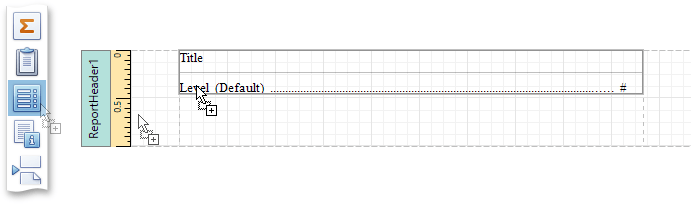
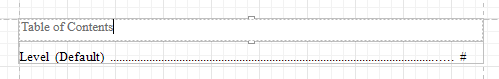
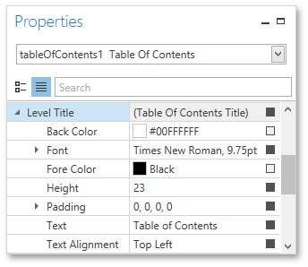
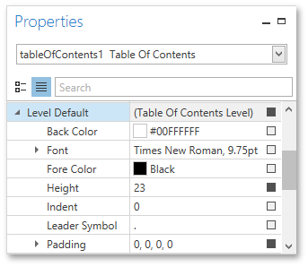
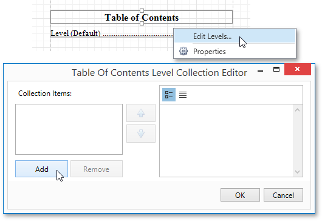
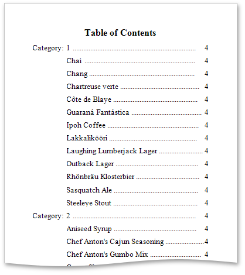

Create a Table of Contents
This tutorial describes how to create a report with a table of contents, which is automatically created based on the bookmarks existing in a report.
To insert a table of contents into a report, do the following.
Drop the Table Of Contents control from the Toolbox onto the Report Header Band.

Alternatively, you can double-click the control in the Toolbox. In this case, if the report does not contain a Report Header, it will be created automatically, so that the table of contents can be added to it.
Double-click the title of the table of contents and specify its text.

To customize the title's appearance, use the Level Title option's settings available in the Properties Panel.

To customize the appearance of all other levels, use the Level Default option's settings.

To customize a specific level individually, add a corresponding item to the Levels collection of the table of contents.

After adding a new level, you can access and customize its properties.
The table of contents are now ready. Switch to the Print Preview and view the result.
